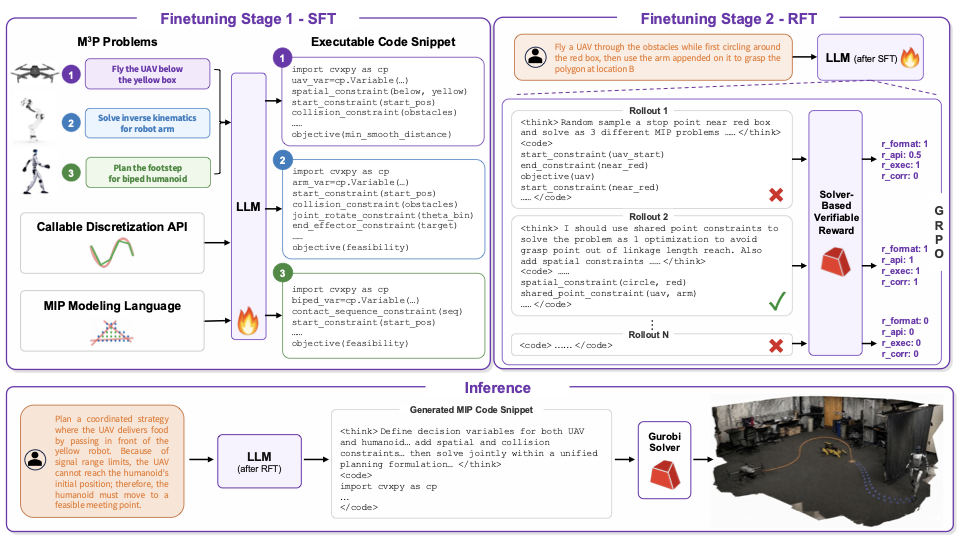
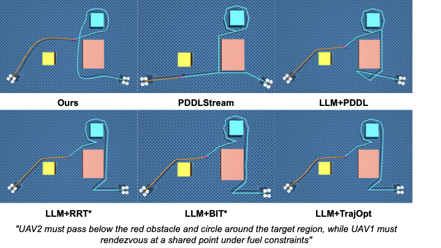
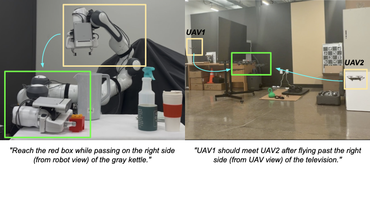

Overview
Language to executable motion planning
Multi-modal motion planning requires joint reasoning over continuous trajectories and discrete mode transitions. M3P-R1 trains a large language model to translate natural-language robotic tasks into executable mixed-integer programming (MIP) formulations.
Instead of producing an unverified plan, the model writes solver-backed Python code. Solver feedback rewards valid formatting, API coverage, execution, and task correctness, making the generated planning program both inspectable and verifiable.
Method
Learning to compose MIP programs
M3P-R1 starts with supervised fine-tuning on executable MIP programs, then uses reinforcement fine-tuning with solver-verifiable rewards to improve code quality and planning correctness.

Describe
A natural-language task specifies the environment, constraints, and desired goal.
Generate
The LLM writes CVXPY-based MIP code using callable discretization APIs.
Verify
A MIP solver executes the program and returns objective feedback for training.
Plan
The resulting solution yields feasible, coordinated multi-modal trajectories.
Evaluation
Reliable planning across modalities

Solver-grounded generation improves task success
On LLMM3P Bench, M3P-R1 reaches 91.7% success on single-modal tasks and 80.9% on multi-modal compositions. The strongest prompt-only baseline reported in the paper reaches 65.3% and 40.3%, respectively.
- Five single-modal task families
- Eight multi-modal compositions
- Joint discrete-continuous optimization
- Trajectory validity checked by the solver

Project video
See M3P-R1 in action
Watch the project video for an overview of the model, its solver-in-the-loop training, and multi-modal robotics results.
Citation
Reference
@inproceedings{sun2026m3pr1,
title = {M3P-R1: Reinforcement Learning for Large Language Model Guided Multi-Modal Motion Planning via MIP Code Generation},
author = {Sun, Xingpeng and Pan, Zherong and Cheng, Kai and Tang, Xindi and Bukhari, Syed Talha and Bera, Aniket},
booktitle = {Conference on Robot Learning},
year = {2026}
}